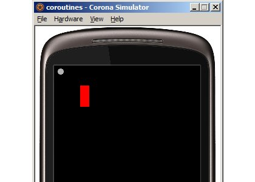
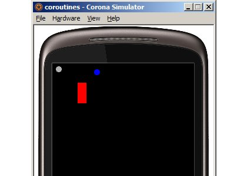
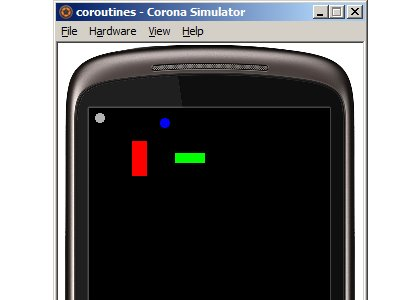

Today’s guest tutorial comes to you courtesy of X.
Coroutines, introduced in Lua 5.0, are one of the language's key features. Yet despite having been available in Corona from the beginning, they seem to receive very little attention.
This is unfortunate, as coroutines are quite powerful. This article will touch on just a few of their many uses, in particular those which play on Corona's own strengths.
The basics
Let's begin with a quick primer on the API. All functions are found in the coroutine table. As of this writing, these have not been included in Corona's SDK API reference, but may be found in the Lua manual.
Creating a coroutine is simple enough:
-- This is the "routine" part of the coroutine, the code that gets run...
local function Body ()
print("In the coroutine!")
end
-- ...and this is the object we need to run it.
local co = coroutine.create(Body)
This gives us a reference, co, to the coroutine.
We can inspect its type:
print(type(co)) --> prints "thread"
What we find is that co is a distinct kind of object, rather than a table or userdata as we might expect. Don't worry
too much about the term "thread"; in Lua, it and "coroutine" are mostly interchangeable[1].
Also, these are are not operating system threads, which will preempt running code to switch tasks. Rather, coroutines are collaborative, which
means is the programmer's decision when to take a break.
We can ask about the coroutine's status:
print(coroutine.status(co)) --> prints "suspended"
As we can see, simply creating the coroutine doesn't run it. You shouldn't find this too surprising. Creating a function, for instance, is distinct from calling it. To run the coroutine, we must do this:
coroutine.resume(co) --> prints "In the coroutine!"
The body executes, and the message inside gets printed, as expected.
What is its status now? Let's check:
print(coroutine.status(co)) --> prints "dead"
The body has run its course, so nothing remains for the coroutine to do, and it becomes dead.
Once a coroutine is dead, all we can do with it is ask its status, which will always be "dead". If we try to resume it
once more, nothing happens. Or rather, as we'll see shortly, it fails silently.
At this point, coroutines seem like nothing more than a complicated way to call a function once, and only once!
The missing piece of the puzzle is the ability to yield:
local function Body ()
print("First resume")
coroutine.yield()
print("Second resume")
coroutine.yield()
print("Final resume")
end
local co = coroutine.create(Body)
coroutine.resume(co) --> prints "First resume"
print("After first yield")
coroutine.resume(co) --> prints "Second resume"
print("After second yield")
coroutine.resume(co) --> prints "Final resume"
The first coroutine.resume kicks off the coroutine. The code at the beginning of the body executes, and a message is
printed. So far, nothing new.
When the coroutine.yield fires, we suddenly hop outside of the coroutine's body and back among the code that created it.
Instead of getting the message "Second resume", we see "After first yield".
The coroutine is once again in a suspended state, just as it was after being created. It is not dead; there is still code left to execute. However, the coroutine won't run again until we explicitly resume it.
When we do so, execution picks up where it left off, immediately after the yield, and we get the expected "Second resume". Another yield and a final resume round out the snippet, giving us "After second yield" followed by "Final resume".
Checking the status after each of the yields gives us "suspended". After the final resume, our coroutine is once again
"dead".
Working with data
It's possible to pass data to and from a coroutine.
We can send values to the coroutine by passing them as arguments to coroutine.resume:
local function Body (a, b, c)
DoSomething()
local d, e = coroutine.yield()
DoSomethingElse()
local f, g, h = coroutine.yield()
DoOneLastThing()
end
local co = coroutine.create(Body)
coroutine.resume(co, "one", 2) -- a = "one", b = 2, c = nil
coroutine.resume(co, 8, {}) -- d = 8, e = the table
coroutine.resume(co, 42, 9) -- f = 42, g = 9, h = nil
As we see, on the very first resume (the one which kicks the coroutine off, after creation), the data wind up in the parameters.
On each subsequent resume, they instead show up as return values of the most recent coroutine.yield.
Receiving is not too different. We work through coroutine.yield instead:
local function Body ()
DoSomething()
coroutine.yield(1, "3")
DoSomethingElse()
coroutine.yield({ n = 6 }, 7, 4)
DoOneLastThing()
return "Data", 1
end
local co = coroutine.create(Body)
print(coroutine.resume(co)) --> prints true, 1, "3"
print(coroutine.resume(co)) --> prints true, something about the table, 7, 4
print(coroutine.resume(co)) --> prints true, "Data", 1
Here we see that any arguments passed to coroutine.yield end up as return values of the most recent coroutine.resume,
as do any values returned from the coroutine body.
Incidentally, Programming in Lua contains an excellent example of data-passing in action.
Now, there's something peculiar about the yield snippet. In the printed results, what does that true mean?
It indicates that the resume was successful. If an error had occurred along the way, that true would be a false instead,
the only other return value being an error message. When I mentioned earlier that resuming a dead coroutine fails silently, this is what is
actually happening. And speaking of dead coroutines, that's what we're stuck with, following an error.
Wrapping up
We'll often only need to create, resume, and yield the coroutine. This is common enough that a convenience function, coroutine.wrap,
is provided in order to make coroutines more friendly to use:
local function Body ()
print("First resume")
coroutine.yield()
print("Second resume")
coroutine.yield()
print("Final resume")
end
local wrapped = coroutine.wrap(Body)
wrapped() --> prints "First resume"
wrapped() --> prints "Second resume"
wrapped() --> prints "Final resume"
This resembles our earlier examples, except resuming the coroutine seems to behave like a regular function call. In fact, the wrapper is
just a function; coroutine.resume, along with the coroutine reference itself, are taken care of behind the scenes.
Passing data around works much like before, except unlike coroutine.resume, the wrapper doesn't return a boolean. So what if it
fails? For instance, in the last example, if we were to call the wrapper once more, now that the coroutine has finished?
"KERBLOOEY!"
Of course, when developing in Corona, this is generally what we'll want. It's an error like any other. With all this under our belt, we're ready to proceed.The coroutine-timer tag team
coroutine.wrap offers some interesting possibilities.
In particular, the wrapper being just a function has an interesting corollary. Many interfaces ask for functions, such as Corona's event listeners or onComplete handlers in transitions, and these will happily accept our coroutine-in-disguise like any other.
Now, presumably we would favor coroutines over regular functions because we want or need the yield capability. Once we yield, however, the rest of the coroutine won't happen, unless the wrapper gets called again (remember, doing this just performs a resume, under the hood). Therefore, we'll typically want to use coroutines in logic that we expect to trigger multiple times.[2]
We happen to have many such mechanisms in Corona. Timers, for one:
local function Body ()
print("First resume")
coroutine.yield()
print("Second resume")
coroutine.yield()
print("Final resume")
end
timer.performWithDelay(1000, Body, 3)
As you might imagine, this will fire every second or so, printing one of the now-familiar messages each time.
This is all well and good, but notice the iteration count: three iterations. Two for the yields and one more for the final leg. If we overestimate
this count, say by specifying four iterations in the above, we'll end up trying to resume a dead coroutine. The code above is quite simple, so this
isn't much of a worry. As our coroutine body grows larger, it becomes increasingly difficult to keep track of the count, especially once the code
includes loops and function calls. Once we bring if statements into the mix, we're completely out of luck.
We really want something that "just works". Fortunately, "timer" events come packaged with a reference,
source, which can be used to cancel the corresponding timer. Rather than hard-coding
some number of iterations, we can now let the timer run indefinitely, only canceling it when we've finished our task.
A first attempt might go something like this:
local function Body (event)
DoSomething()
coroutine.yield()
DoSomethingElse()
timer.cancel(event.source)
end
timer.performWithDelay(50, coroutine.wrap(Body), 0)
And this will work... until it doesn't. Unfortunately, coroutines flush out a leaky abstraction: Corona is recycling the event tables. Presumably this is to avoid garbage collector spikes, and is a great idea. With normal functions, we would never know the difference. But we're being naughty. By yielding, we end up holding on to that event table across multiple frames. Meanwhile, Corona has been merrily swapping in other timer references as needed. When we finally get around to canceling "our" timer, we may cancel a different one instead, or not have one at all! Calamity ensues.
We can play nice by saving the handle up-front:
local function Body (event)
local source = event.source
DoSomething()
coroutine.yield()
DoSomethingElse()
timer.cancel(source)
end
timer.performWithDelay(50, coroutine.wrap(Body), 0)
This does work. However, the "timer" event contains a couple other fields, count and time, and similar issues crop up.
We can account for all of this. Our code probably won't care where the event table came from (and as we just saw, it shouldn't), and will be none the wiser if we give it a "shadow" table instead.[3] Behind the scenes, we update this shadow table instead, and our code is happy.
A handy timer utility
It will quickly grow tiresome figuring these things out each time. Furthermore, most coroutine-based timers are going to share a similar structure. We ought to roll this all up for reuse:
function CoroPerformWithDelay (delay, func, n)
local wrapped = coroutine.wrap(function(event)
func(event) -- Do the action...
return "cancel" -- ...then tell the timer to die when we're done
end)
local event2 -- Our own private copy of the event
return timer.performWithDelay(delay, function(event)
event2 = event2 or { source = event.source } -- On first run, save source...
event2.count = event.count -- ...copy these in every time.
event2.time = event.time
local result = wrapped(event2) -- Update the coroutine; it will pick up the event on the first run
if result == "cancel" then
timer.cancel(event.source) -- After func completes, or on a cancel request, kill the timer
end
end, n or 0)
end
Now, we've been looking at timers, but the same ideas apply to "enterFrame" handlers, and even to repeating transitions. I tend to favor
timers because of the customizable delay, and I find them a bit more natural to cancel. If the coroutine is going to run forever anyway, however,
it's rather arbitrary.
Since we've brought up canceling, note that it's perfectably fine to cancel the timer early. However, it's important to realize that the timer
and coroutine are two distinct things, so the coroutine itself wouldn't automatically yield. Our helper function lets us do both at once (from
inside the coroutine, of course) by calling coroutine.yield("cancel").
Debugging Via Coroutines
The print() statement is a hallmark of debugging in any language. Sometimes this comes down to convenience, such as when it would take too much effort
to configure a debugger, then place and watch breakpoints. Integrating a debugger may even seem to make the problem go away: an attack of the dreaded
Heisenbug! A common strategy is to sprinkle print statements around suspect points in the code, then
compare the output with our expectations. If a message doesn't appear, either the code in question was never visited or the program crashed along the way. As we narrow
down the scope of the problem, we can remove prints that are no longer necessary.
The trouble in normal code is that most (or all) of these prints will execute, so we wind up with one long batch of messages. Furthermore, we might
need some sense of when a piece of code was called, and what our program looked like at the time. It's hard to know where the process broke down.
Enter coroutines. If we can roughly isolate the suspect code, we can temporarily embed it in a coroutine. Then, by pairing each of our prints with a yield, we can inspect the state of the world at that moment. Consider the following:
DoSomething()
-- We're curious about the snippet starting here...
local red = display.newRect(100, 100, 30, 70)
red:setFillColor(1, 0, 0)
print("Added red rect")
local blue = display.newCircle(150, 30, 10)
blue:setFillColor(0, 0, 1)
print("Added blue circle")
local green = display.newRect(200, 100, 60, 20)
green:setFillColor(0, 1, 0)
print("Added green rect")
-- ...and ending here
DoSomethingElse()
With coroutines:
DoSomething()
-- Start of temporary debugging code... --
local function print2 (...)
print(...)
coroutine.yield()
end
CoroPerformWithDelay(2000, function() -- Wait 2 seconds after each print statement
-- ...end of temporary debugging code --
local red = display.newRect(100, 100, 30, 70)
red:setFillColor(1, 0, 0)
print2("Added red rect")
local blue = display.newCircle(150, 30, 10)
blue:setFillColor(0, 0, 1)
print2("Added blue circle")
local green = display.newRect(200, 100, 60, 20)
green:setFillColor(0, 1, 0)
print2("Added green rect")
-- Start of temporary debugging code... --
end)
-- ...end of temporary debugging code --
DoSomethingElse()
By using coroutines, we get to watch the action unfold. In the example above, we now have a couple seconds to review the state of affairs after each print,
without significantly changing the shape of the code. If we only need to do some visual inspection, we can even do away with the prints entirely and simply use
coroutine.yield.
I employed this technique quite recently, in order to test some layout routines. Since these
primarily involve display objects, print only got me so far. Many of the operations consist of one object being positioned relative to another,
so if something went wrong in the middle, the whole layout fell apart. By viewing the steps one at a time, I was able to pinpoint when and where things
went awry.
It is important to note that this method does slightly alter the program flow, on account of the yields, so we need to include this in our notion of isolation.
In the previous example, for instance, DoSomethingElse shouldn't depend on anything that happens inside the coroutine.
The power of touch
A timer may not always be the best fit when debugging. With too short a delay, the steps may go by too quickly. Too long, and we'll quickly grow weary waiting for each step, especially if the problem tends to show up rather late.
Fortunately, time isn't the only way to drive a coroutine. Earlier, we hinted at using wrapped coroutines in event listeners. Well, this includes
"touch" listeners. With this in mind, we can drop a dummy display object into the scene, and assign it a touch listener which resumes the
coroutine. Then, instead of waiting on the timer, we can quickly click through any steps we want to ignore, taking our time once we find something suspicious.
The previous example then becomes:
DoSomething()
-- Start of temporary debugging code... --
local function print2 (...)
print(...)
coroutine.yield()
end
local co = coroutine.create(function() -- Wait 2 seconds after each print statement
-- ...end of temporary debugging code --
local red = display.newRect(100, 100, 30, 70)
red:setFillColor(1, 0, 0)
print2("Added red rect")
local blue = display.newCircle(150, 30, 10)
blue:setFillColor(0, 0, 1)
print2("Added blue circle")
local green = display.newRect(200, 100, 60, 20)
green:setFillColor(0, 1, 0)
print2("Added green rect")
-- Start of temporary debugging code... --
end)
local button = display.newCircle(20, 20, 10)
button:setFillColor(.7)
button:addEventListener("touch", function(event)
if event.phase == "began" then
local ok, err = coroutine.resume(co)
if not ok then
print(err) -- What went wrong?
end
end
return true
end)
-- ...end of temporary debugging code --
DoSomethingElse()
After one click, we see:
(The gray circle is our dummy display object.)
Following a second click, we have:
Finally:
This is actually a situation where coroutine.create and coroutine.resume are more appropriate. For one thing, we don't want
to crash our program simply because we clicked too many times and ran a dead coroutine. For another, this offers us a basic sandbox, where an error
can occur without bringing down our whole program (the coroutine will then be dead, of course). We are hunting for errors, after all. If our code
snippet was properly isolated, this should work just fine.
Once everything's working, we can remove all the "temporary debugging code" and move on.
Gotchas
There are a few cases where coroutines break, owing mainly to some quirks in the interaction between Lua and C. Thanks to some redesign in the codebase, these have been fixed in Lua 5.2+, but Corona is based on 5.1, so for the time being these issues are a fact of life.
Two such problem areas involve protected calls and metamethods, as Peter "Corsix" Cawley points out on his blog (see point #2). Note that the article itself mainly concerns 5.2, whereas we only care about the 5.1-related misbehavior.
There have been some attempts to deal with protected calls, such as Coxpcall. Coxpcall was created expressly to allow protected calls in Copas, a library for building TCP/IP servers atop coroutines.
Iterators are the other problem spot. A similar-looking example for them:
local wrapped = coroutine.wrap(function()
for _ in function() -- An (obviously not useful!) iterator body
print("Before")
coroutine.yield()
print("After")
end do
print("Loop!")
end
end)
wrapped()
This is a rather lame iterator (it doesn't even attempt to iterate!), but it demonstrates the issue. Attempting to yield directly from the so-called iterator function results in an error, in Lua 5.1. We see the message "Before", and then our program goes down in flames.
Note that this is not the same as using coroutines as iterators), which is incredibly useful but, alas, an entire topic of its own!
Thankfully these all tend to be rare situations, but it's good to be aware of them.
Saving
The final gotcha comes from a design perspective. Being able to yield offers us great flexibility, but the flip side is that we do actually need to traverse the coroutine body to arrive at a given point in our code, with all your local variables and program state in order. We can't just jump to somewhere in the middle, in general. This presents a problem if your application needs to be able to save and later restore itself exactly where it left off. This isn't necessarily insurmountable, but you will need to plan for it from the beginning. It will almost certainly be difficult, and probably not worth the hassle.
If your application only allows you to save every now and then (say between levels or at checkpoints, in a game), or has some leeway regarding what gets restored, this is a non-issue.
Examples
Most of the code in this article has been adapted from the samples repository found here. It can be downloaded from here.
These samples were made to be shown during a Corona Geek hangout, so I wrote in a style that allowed entire segments of the program to be turned on and off quickly. In particular, code gets blocked in long comments. By doing so, we can start with a commented-out section:
--[[
DoSomething() -- commented out, does not run
--]]
---[[
DoSomething() -- no longer commented, will run
--]]
To disable it once more, simply remove the hyphen. I did this for each of the examples in main.lua, as well as within the modules themselves.
Also, in order to avoid constant switches between the simulator, IDE, and console, I overrode print in main.lua, such that messages
show up on the screen (as text objects) rather than the console. To disable this, simply remove or comment out the assignment to print.
Summing up
Coroutines are a truly powerful feature of Lua, which when combined with such mechanisms as Corona's timers and event listeners, offer us a novel and useful approach to a whole host of difficult problems.
We've only scratched the surface. Chapter 9 of Programming in Lua introduces several topics only touched on here. Explore, and have fun!
[1] A coroutine is a thread. The reverse is also true, with one very important exception: the main thread. This is the "normal" part of the program, where your code runs when it's not inside a coroutine.
[2] This approach does have its place. We could, for instance, assign the same wrapper to several listeners. Then, as these fire off piecemeal, the coroutine is gradually driven forward.
Another use case is to abort complex code. We may be in the middle of some heavy operation, ten function calls deep, when we realize we just can't deal with
it. It's easy enough to return out of one function, but getting out of nine more is a different story! On the other hand, if all of this is inside
a coroutine, we can just yield. Suddenly we're back in the main thread, and we can just throw the coroutine away.
As the saying goes, "It's better to ask forgiveness than permission." Essentially, if it's too much trouble to figure out up-front whether an operation has any hope of working, the best idea might be to just go for it. When we combine this with a set of choices, we get a technique called backtracking, which can be summed up in another expression, "If at first you don't succeed, try again."
Of course, we might want to do normal yields in the coroutine. The ability to send data through coroutine.yield comes to our rescue here.
At the outset, we reserve a couple values, say "success" and "failure", and resume until we run into one or the other.
[3] Creating shadow tables reintroduces garbage, of course. However, coroutine-based timers will by and large be created far less frequently than garden variety timers, and be longer-running besides, so this is unlikely to be a problem in practice.